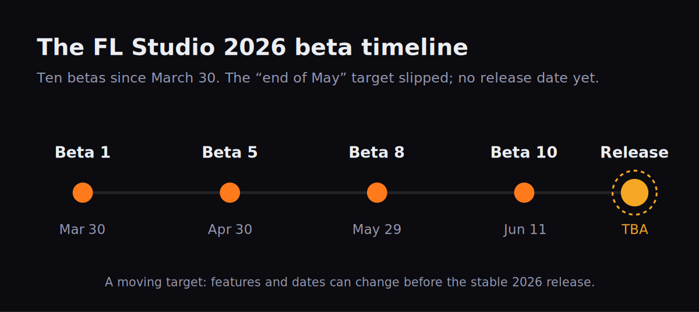

FL Studio 2026 is real, it is in your hands right now if you want it, and it is also not finished. As of June 2026 it exists as a public beta — the version everyone is searching for is a work in progress that Image-Line is shipping in the open, one build at a time. That makes the honest question different from the one you usually ask about a new release. It is not “is the upgrade worth the money?”, because FL Studio's Lifetime Free Updates mean 2026 costs existing owners nothing. The real questions are: what actually changed, and should you install the beta now or wait for the finished release? This guide answers both — an organized, verified breakdown of every confirmed feature, framed for the producers who actually live in FL (the beatmakers, the trap and pop writers, the bedroom-to-billboard crowd), and a clear-eyed call on whether to jump in today.
Some links here (to FLEX packs, plugins and gear) may be affiliate links — if you buy through one we may earn a small commission at no cost to you. FL Studio 2026 itself is a free update, and nothing below is a paid placement. The features are reported exactly as Image-Line ships them.
FL Studio 2026 is in public beta (Beta 10, June 2026); there is no confirmed release date yet. The headline additions are a fully rebuilt FLEX synth (lower CPU, new UI), the new Transmitter plugin (splits a sound into transient + sustained streams), a set of AI-assisted chord and voice-leading tools, an always-on Audio Logger, and one-click “Remix a song” stem separation. The update is free for every owner, and the beta installs to its own folder without touching your current version. Install it if you want the new toys now and aren't on a deadline; wait if you do client work, lean on third-party plugins, or need a rock-solid Mac session. Because it's free for life, waiting costs you nothing.
![Feature map of FL Studio 2026, grouping confirmed beta additions into four columns: Instruments (FLEX rebuilt, Transmitter, SoundFont Player, Note Arpeggiator), Songwriting (chord detection panel, Chord Stamp with voice-leading, AI chord progressions, Gopher AI scripting), Workflow (Audio Logger, Remix a song stem split, audio-clip pan/pitch/snap, FPC multi-sample layering), and Performance (Apple Silicon Audio Workgroups, faster plugin-list loading, AU moved below VST on macOS, Windows CPU-throttle fix).](../images/fl-studio-2026-whats-new-map.png)
Every confirmed FL Studio 2026 beta feature, grouped by what it changes. Source: Image-Line's official 2026 beta release notes.
Is FL Studio 2026 out yet? And is it free?
Short answer: it's not finished, and it's free. FL Studio 2026 has been in public beta since March 30, 2026, when Beta 1 went up on the Image-Line forum. By June 11 the project had reached Beta 10 — ten public builds in roughly ten weeks. An early third-party post floated an “end of May” release window; that date came and went with the software still in beta, and Image-Line has not committed to a firm replacement. So if you've seen a confident “FL Studio 2026 release date” headline, treat it with suspicion: as of this writing, the only honest answer is release TBA.

Ten betas and counting. The early target slipped, and the release date is still unannounced — a moving target by design.
Here's the part that takes the pressure off: the beta won't touch your existing setup. Image-Line ships each FL Studio 2026 beta as a separate install that lands in its own folder and runs alongside your current stable version — which, right now, is 2025.2.5. Nothing about installing the beta puts your projects, your stable install or your saved work at risk. The one rule that does matter runs the other way: Image-Line warns plainly that betas are not for mission-critical work. They expire, and they aren't compatible with the eventual official release, so anything you build inside the beta is a sketch, not a deliverable. Treat it as a sandbox.
Don't start a client beat, a deadline mix, or a release-bound project inside the FL Studio 2026 beta. Beta projects can break on the next build and won't open in the final release. Keep real work in your stable install; use the beta to explore.
On cost, FL Studio's long-standing promise removes the usual upgrade anxiety entirely. Lifetime Free Updates means that if you own any edition of FL Studio, you get 2026 free, forever — your projects, your purchased plugins and your license all carry forward. There is no “buy the new version” moment and no migration tax. That single fact reframes the whole decision: this isn't a question of whether the upgrade is worth it (it's free), only when you want to step into it. If you're brand-new to FL and weighing it against other DAWs first, our full FL Studio review and the broader best DAW for hip-hop, best DAW for rap and best DAW for beginners guides are the place to start; this page assumes you're already in the FL world and want to know what 2026 adds.
One bit of orientation for newer users: the year-based name is just how FL Studio versions itself now. The old numbered era (FL Studio 20, 21) gave way to year names — 2023, 2024, 2025, and now 2026 — but it's the same continuous program getting the same free updates. “FL Studio 2026” isn't a new product you migrate to; it's the next free step in the one you already own.
The two features that change the sound: FLEX rebuilt & the Transmitter
Most of what's new in 2026 is quality-of-life. Two additions are different — they change what comes out of your speakers — and they're the reason to care about this release at all.
FLEX, rebuilt from the ground up. FLEX is FL Studio's free preset-based synth, the engine behind a huge share of melodies, plucks and 808-adjacent sounds in modern beats. In 2026, Image-Line's beta notes say FLEX “has been rebuilt from the ground up with a new synthesis engine,” with up to 50 percent lower CPU use when used with second-generation packs, plus a redesigned interface with simplified controls and improved search at both the pack and preset level. Producers testing it have taken to calling it FLEX 2. Note the precise wording on CPU: the up-to-50-percent figure is tied specifically to second-generation packs, not a blanket claim across every existing preset — so your mileage depends on which sounds you load. Image-Line also flags that the new FLEX UI is still being refined during the beta, which is exactly the kind of thing that can shift before release.
For a beatmaker, lower CPU on FLEX is not a spec-sheet abstraction — it's more instances before your project starts crackling. If you stack layered FLEX patches for a melody and run out of headroom, the rebuilt engine buys you room to keep building rather than bouncing to audio early. Under the hood FLEX still blends multiple synthesis approaches (sample-based, subtractive, and wavetable among them) behind its macro-knob front end, so the rebuild is about efficiency and interface, not a change to the fundamental “pick a preset, tweak eight knobs” workflow that makes FLEX fast.
Transmitter — the genuinely new tool. The Transmitter is a brand-new plugin in FL Studio's All Plugins Edition, and it's the most interesting sound-design addition in the release. It splits an incoming signal into two streams — a transient stream and a sustained stream — that you can process independently for dynamics, spectral shaping and effects. In plain terms: the transient is the punchy attack at the start of a sound; the sustained part is the body and tail that follows. Transmitter lets you grab those two halves and treat them separately.
Think about what that unlocks on the sounds beatmakers obsess over. You can crank the click of a kick without smearing its low-end body. You can add air and brightness to the attack of a snare while keeping its tail dark. You can tighten the punch on an 808 without dulling the sustain that carries the bassline. It's a more surgical relative of the transient shaper concept — but because you're literally working on two separated streams rather than one envelope, the control goes deeper. Forum testers' first reaction to it has been enthusiastic for a reason: this is the kind of thing producers previously reached for third-party plugins to do.
The fastest way to hear what Transmitter does: drop it on a drum bus, push the transient stream's level and brightness, then pull the sustained stream down. You'll hear the groove snap into focus without the mix getting louder. Then try the reverse on a pad — soften the attack, lift the body — for instant smoothness.
The songwriting upgrades: chords, voice-leading and AI scripting
If 2026 has a theme beyond the two sound tools, it's help with notes and harmony — and this is squarely aimed at the melody-first producers who make up so much of FL's base. A run of new tools turns the Piano roll into something closer to a songwriting partner.
Chord detection. A new chord detection panel reads the notes you play and tells you what chord you've got — working from incoming MIDI, from typing-keyboard-to-piano input, and from note selections in the Piano roll. (It's a toolbar tool you add yourself, and it tops out at detecting ten notes at once.) For self-taught producers who play by ear and never learned chord names, it's a quiet education: you build a voicing that sounds right and the panel names it back to you.
The Chord Stamp Tool with voice-leading. This is the one that saves real time. The Chord Stamp Tool stamps full chords into the Piano roll in two modes, and the voice-leading is the clever part. In top-down mode, your melody leads: the note you click becomes part of the chord that FL builds underneath it — perfect when you've got a topline and need harmony beneath it. In bottom-up mode, harmony drives: FL Studio picks a chord for you based on where you click, which Image-Line frames as great for quick ideas and “inspire me” workflows. For trap, R&B and pop writers who think in melodies and struggle with the chords behind them, that top-down mode is close to a cheat code.
The AI Chord Progression Tool. Sitting alongside the stamp tool is an AI-powered Chord Progression Tool, offering both preset and algorithmic progressions to kick-start an idea. In the 2026 beta it's been promoted to the Piano roll's right-click Tools icon (the old Riff Machine moved to middle-click), and there's a handy chord nudge that lets you swap chords just by clicking and dragging — auditioning a different progression without re-drawing anything.
Gopher gets better at scripting. Gopher, FL Studio's built-in AI assistant, also levels up in 2026: Image-Line's notes say it's now able to create improved Piano roll and VFX scripts on demand. You can ask it, in plain language, to generate a script — “remove random notes from a score,” for example — and paste the result in. Because Gopher draws on FL Studio's official documentation and shows its sources, it's a genuinely useful way to automate fiddly Piano-roll tasks without learning Python first. If you already use autotune-style vocal tricks in FL, pairing these note tools with our guide to using autotune in FL Studio covers both halves of a modern vocal-led track.
Workflow and safety nets: Audio Logger, “Remix a song” and more
Beyond sound and songwriting, 2026 is full of workflow upgrades. Three are worth knowing by name; the rest are the steady stream of polish FL Studio adds every cycle.
Audio Logger — never lose a happy accident. This is the sleeper feature beatmakers will love. FL Studio 2026 adds an Audio Logger that works like the existing MIDI Logger but for audio: it's always recording the Master Mixer Track in the background. That means the magic take you played once and didn't hit record on — the riff, the vocal ad-lib, the accident that sounded perfect — isn't gone. It was being captured the whole time. For anyone who improvises into their speakers, this quietly removes one of the most painful losses in music-making.
“Remix a song” — one-click stem separation. The Welcome Window gains a “Remix a song” option that loads a track and stem-separates it straight into the Playlist with a single click, tapping FL Studio's AI stem-separation. For flippers and samplers, this is a goldmine: pull the vocal off a reference, isolate the drums from a loop, grab the bassline from a track you want to rework — all without leaving FL or wiring up a separate tool. If stems are central to how you work, our AI stem separation guide goes deeper on what these models can and can't cleanly pull apart.
Audio-clip workflow upgrades. The audio editing in the Playlist gets noticeably more capable. Clip properties now include pan and pitch controls; you can normalize a selection of clips individually or as a group; stretching selections now snaps by default (hold Alt for unsnapped), which harmonizes stretching with the rest of FL's snapping behavior; and a new cursor distinguishes resizing a clip from stretching it, so you stop accidentally time-stretching when you meant to trim. Small things, but they're the friction points you hit a hundred times a session.
New native plugins and odds and ends. 2026 also folds in a SoundFont Player for loading classic SF2 banks, a Note Arpeggiator that turns incoming notes into rhythmic, repeating, re-pitched patterns, and the ability to drop multiple samples onto a single FPC pad to build layered drum hits. Plugin lists load faster, you can right-click any key to give it a custom text label, and the Browser can show inline sample waveforms. None of these is a headline on its own, but together they're the connective tissue that makes a daily driver feel smoother. (If you're new to building beats in FL, the FL Studio for beginners walkthrough still covers the fundamentals these upgrades sit on top of.)
Performance: a real story on Mac, smaller wins on Windows
Performance work in 2026 lands unevenly across platforms — and if you're on a Mac, this is the section that should hold your attention.
Apple Silicon gets the big change. On macOS, FL Studio 2026 now uses the Audio Workgroups API so that audio threads work toward a common deadline. The practical payoff: it reduces the risk of underruns — dropouts and crackles — when audio CPU usage suddenly spikes. If you've ever had a heavy FL project glitch on an M-series Mac the moment a busy section kicks in, this is aimed directly at that. Alongside it, the beta moves Audio Unit plugins below VSTs in the plugin list by default, nudging Mac users toward VST for better compatibility, and it shows a clear message when a Mac-incompatible plugin (like the speech synth) is loaded.
Windows gets a quieter tune-up. On Windows the standout change is to how FL Studio requests the Windows performance plan, adjusted to avoid CPU throttling — less dramatic than the Mac engine work, but it can matter on laptops that aggressively down-clock. There's also the broader plugin-loading speedup that benefits everyone.
The takeaway is a little counterintuitive: the platform that gets the most improvement is also the one where you should be the most careful about jumping early. Audio Workgroups and the AU reshuffle are engine-level changes, and engine-level changes are exactly where a beta is most likely to behave differently from your stable install. Mac users who depend on a session never dropping out have the most to gain here — and the most reason to test on a copy before trusting it. If you're choosing a machine or platform around FL in the first place, our best DAW for Mac guide frames where FL Studio sits in that landscape.
Should you install the FL Studio 2026 beta? An honest call
Here's the decision the whole page is built around. There's no score and no review verdict, because scoring a moving beta would be dishonest — features can still change and the release isn't here. What there is is a clear answer to “is this for me, today?” And because the update is free for life, there is genuinely no wrong choice — only a right time for your situation.

Work top to bottom. Any “yes” sends you to wait; all “no” means the beta is safe to explore.
How to install it safely. If you land on “install,” the safe path is short. Keep your current stable FL Studio exactly where it is — don't uninstall anything. Download the 2026 beta only from Image-Line's official site or forum, and accept the default install location, which puts the beta in its own folder so it runs alongside your stable version without interfering. Then respect the one rule: don't put real work in it. Open beta projects as experiments, expect the occasional rough edge (the FLEX UI in particular is still being refined), and report bugs on the forum — that feedback is the whole reason the beta is public. Done this way, trying FL Studio 2026 is genuinely zero-risk to your existing setup.
How FL Studio 2026 stacks up against Ableton and Logic in 2026
It's fair to ask whether 2026 changes FL's standing against the other big DAWs — and the honest answer is that it reinforces FL's existing strengths rather than reinventing its position. The AI-assisted chord and stem tools and the rebuilt FLEX double down on the fast, idea-first, beat-centric workflow that made FL the default for hip-hop and electronic producers in the first place. What 2026 doesn't do is turn FL into a different kind of DAW — if you prefer Ableton's Session View for live looping or Logic's deep stock instrument suite, those reasons still stand.
The structural advantage worth weighing is the business model. FL Studio's Lifetime Free Updates mean 2026 (and 2027, and beyond) costs existing owners nothing, where competitors run paid major upgrades or subscriptions. Over years, that's a real difference in total cost of ownership. For the full head-to-heads — workflow, stock plugins, CPU, price — see FL Studio vs Ableton and FL Studio vs Logic Pro, and if you produce four-on-the-floor or club music specifically, best DAW for electronic music puts FL in that context. And whichever DAW you settle on, the techniques carry over — our how to sidechain in FL Studio guide is a good example of the kind of skill that matters far more than the version number.
Try this in the beta: three exercises
If you do install the 2026 beta, here are three things to do first — each one shows off a genuinely new capability, from a five-minute warm-up to a full creative flip.
- Open the new FLEX and load a second-generation pack preset (look for the redesigned browser and search).
- Stack two or three layered FLEX instances on a melody the way you normally would.
- Watch your CPU meter, then compare against the same patch idea in your stable FL Studio — you're feeling the lower CPU use the rebuild is built for.
- In the Piano roll, draw a single-note topline, then use the Chord Stamp Tool in top-down mode so FL voices chords underneath your melody.
- Audition alternatives with chord nudge — click and drag to swap a chord without redrawing.
- On your drum bus, add the Transmitter: lift the transient stream's brightness and pull the sustained stream down until the groove snaps into focus.
- From the Welcome Window, use Remix a song to load and stem-separate a reference track straight into the Playlist.
- Mute everything but one stem — a vocal, a bassline, a drum loop — and chop it into a new idea.
- Ask Gopher for a Piano-roll script to transform your chopped MIDI (for example, “remove random notes from a score”) and build the flip around the result.
Frequently Asked Questions
Not as a stable release. As of June 2026 FL Studio 2026 is in public beta — Beta 10 was posted on June 11, 2026, and Beta 1 landed on March 30. An early third-party estimate of an end-of-May release has already passed, and Image-Line has not announced a firm release date. The beta installs into its own folder and runs alongside your current stable version, so you can preview it without disturbing your setup.
Yes. FL Studio's Lifetime Free Updates policy means every FL Studio owner gets the 2026 update for free, with all your existing projects and purchases carrying forward. There's no upgrade fee for existing customers, so there's no financial reason to rush the beta — it's a preview, not a paywall.
No. By design the 2026 beta installs to its own folder and doesn't interfere with your existing installation, so your stable FL Studio and its projects are untouched. The important caveat runs the other way: betas expire and aren't compatible with the official release, so don't save deadline or client work inside the beta.
FLEX has been rebuilt from the ground up with a new synthesis engine. Image-Line's beta notes describe up to 50 percent lower CPU use when used with second-generation packs, alongside a redesigned interface with simplified controls and improved search at both the pack and preset level. Producers in the beta have nicknamed it FLEX 2. Image-Line notes the UI is still being refined during the beta.
Transmitter is a new plugin in the All Plugins Edition that splits an incoming signal into separate transient and sustained streams, so you can process the attack and the body of a sound independently for dynamics, spectral shaping and effects. In practice it gives you surgical control over the punch of a drum or 808 versus its tail and tone.
Yes — that's their point. FL Studio 2026 adds a chord detection panel, an AI-powered Chord Progression Tool, and a Chord Stamp Tool with voice-leading in two modes: top-down, where the note you click leads and the chord is built underneath, and bottom-up, where FL Studio chooses a chord based on where you click. For trap, R&B and pop producers who think in melodies first, this turns single notes into voiced chords quickly.
Install it if you want FLEX's lower CPU use, the Transmitter or the chord tools now, you can work in a separate folder, and you're not on a deadline. Wait for the stable release if you do client work, rely heavily on third-party plugins (beta plugin rescans can be disruptive), or are on macOS and sensitive to audio-engine changes. Because the update is free for life, waiting costs you nothing.
It should be more stable under load. On macOS, FL Studio 2026 now uses the Audio Workgroups API so audio threads work toward a common deadline, which reduces the risk of dropouts when audio CPU usage spikes suddenly. The beta also moves Audio Unit plugins below VSTs in the plugin list by default to encourage VST use for compatibility. Because these are engine-level changes, Mac users who depend on a rock-solid session have the most reason to test carefully before switching.